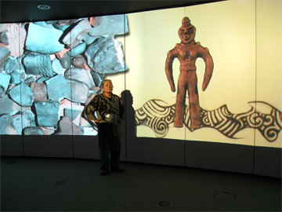

|  | |
| 【[Unearthed] 土偶展】 | 【[Unearthed] 土偶展】 （同行した新潟県立博物館の宮尾氏と） |
| 【専門家らとの討論会】 （写真中央がサイモン・ケイナー氏） |
【ワークショップにて猪風来講演会】 |
このたび猪風来は[Unearthed]（発掘展）に関連したワークショップへの出席のため、
セインズベリー日本藝術研究所より英国に招待され、行ってまいりました。
今回のテーマは「現代芸術と縄文土偶」、
その趣旨は「“JOMON”アートは現代にどのように生かされているのか」という問いへの答えとして、
「日本を代表する現代の縄文アーティストの縄文造形論と作品」を提示するというものです。
=∴=∵=∴=∵=∴=∵=∴=∵=∴=∵=∴=∵=∴=∵=∴=∵=∴=∵=∴=∵=∴=∵=∴=∵=∴=∵=∴=
８月２３日にはノリッジ・コミュニティセンターでレセプションとワークショップがあり、
そこで猪風来講演会が開かれました。
参加者はセインズベリー日本藝術研究所副所長であるサイモン・ケイナー氏をはじめ、
日本やヨーロッパ各国を中心とした大学教授や研究者など考古学の専門家らです。
スライドを交えながら、猪風来の創作の原点である縄文スピリットと作品について講演が行われました。
参加者らからは、北海道での出産の助産体験や竪穴住居暮らしからうまれた
創作のプロセスと作品造形の迫力に、強い共感や賛辞が寄せられました。
彼らは古来の縄文が現代芸術として花開いていることによろこび、また古代の文化芸術の研究を
未来に生かしていく道の確認となりました。
また実験考古学の実践として、フリント（火打石）の石器づくりが行われました。
英国きっての名人であるジョン・ロード氏の指導はすばらしく、石を造形するという人類最初の創作技法は、
インスピレーションを呼びさます「原初の創造」の姿でした。
| 【レセプションパーティー】 | 【フリント（火打石） の石器づくり】 （写真左がジョン・ロード氏） |
=∴=∵=∴=∵=∴=∵=∴=∵=∴=∵=∴=∵=∴=∵=∴=∵=∴=∵=∴=∵=∴=∵=∴=∵=∴=∵=∴=
今回の英国での体験を通じて感じ、わかったことは次のようなことでした。
１．日本の縄文文化に対する深い関心と共感は、英国はもちろんヨーロッパや世界に広がっている。
２．縄文スピリットと造形を更に発展し、現代から未来へと花開いてゆくよう期待されている。
３．その期待に答えるべく、現代の作家の果たしてゆくべき役割は大きい。
=∴=∵=∴=∵=∴=∵=∴=∵=∴=∵=∴=∵=∴=∵=∴=∵=∴=∵=∴=∵=∴=∵=∴=∵=∴=∵=∴=
猪風来美術館では今回の訪英に関して、『報告展』にて資料や写真でまとめ展示いたします。
| 【セインズベリー日本藝術研究所への大門前にて】 | 【セインズベリー視覚芸術センター】 |